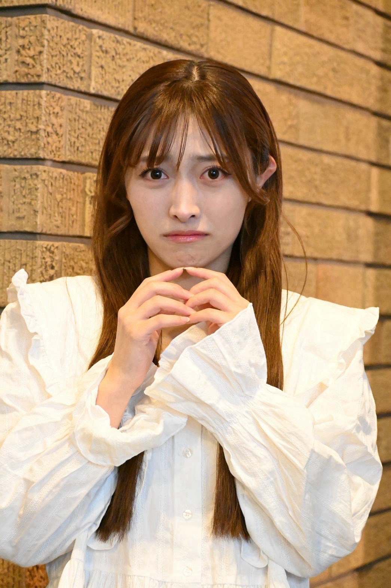
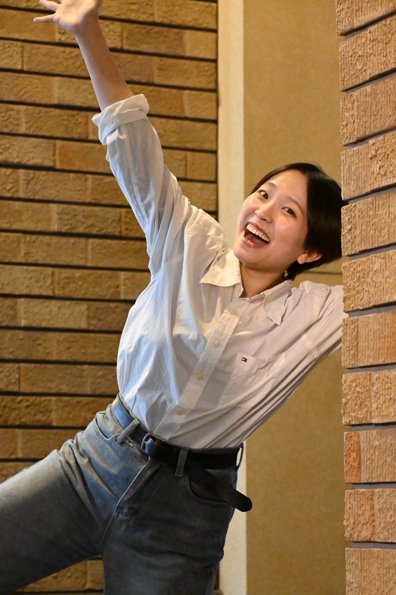

ゆか
CAST：陣あいり
ゆか
⟡高校2年生の女の子
⟡内気な少女
⟡ミュージカルが大好きで、生きがい
⟡実は文化祭の脚本を担当(匿名で応募している)
⟡普段の口癖「シャー！」(驚いた時に出てくる)

CAST：陣あいり
⟡高校2年生の女の子
⟡内気な少女
⟡ミュージカルが大好きで、生きがい
⟡実は文化祭の脚本を担当(匿名で応募している)
⟡普段の口癖「シャー！」(驚いた時に出てくる)

CAST：内田莉子
⟡ゆかと同じクラスの高校2年生の女の子
⟡サッカー部キャプテン
⟡明るく誰とでも打ち解けられるムードメーカー
⟡文化祭の演出を担当する
︎︎⟡普段の口癖「高校に名を残す」
FAIRIES FIVE
世界中のミュージカルに宿る、感情と音楽の妖精たち。
歌とダンスが大好きな、ちょっぴりおせっかいで陽気な5人組。
ゆかを「感情の故郷」を巡る旅へと導き、表現する楽しさや、人の心を動かす音楽の力を伝えていく。
CAST：竹ノ下梨夢
⟡共感ジェットコースター
⟡喜怒哀楽が全身からあふれ出している＋音楽にすぐノリノリになってしまう
︎︎⟡なので、気付けばどこかへ行ってしまっていることも
︎︎⟡💛イエロー担当
CAST：椎名美結
︎︎⟡「みんなをまとめるお姉さん！」
⟡を目指し意気込むが、勢いあまってせっかちに見えてしまう
⟡総じてちょっと不器用だけれど、フェアリーズへの愛は間違いなく強い
︎︎⟡🧡オレンジ担当
CAST：鈴木亜弥
⟡好きなものへの知識と愛があふれるドゥフドゥフヲタク
⟡そもそも彼女は生きとし生けるものすべてにおいて豊富な知識を持っている
︎︎⟡これが関係しているかは不明だが、どこか博士のような口調
︎︎⟡💚グリーン担当
CAST：秋田谷咲希
⟡美しい言葉を使うお言葉プリンセス
⟡ふわふわしているが、核心を突いた言葉を口にする
︎︎⟡そのため、いつの間にか美味しいところをかっさらってしまう
︎︎⟡ピンク担当
CAST：伴晴香
⟡手足が長く、いつも鏡の前でポーズを決めている
⟡即ち、自分であることを楽しむナルシスト
⟡空気を読もうともしないが、これが意外と進展を促したりもする
︎︎⟡💙ブルー担当